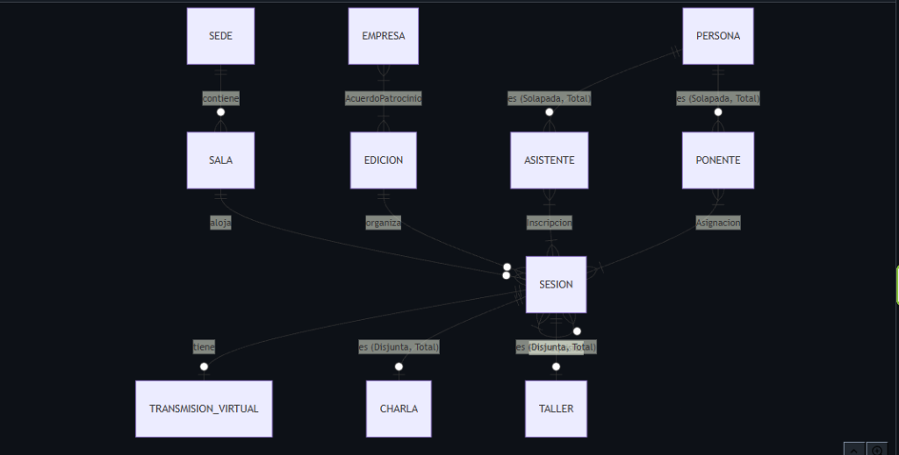
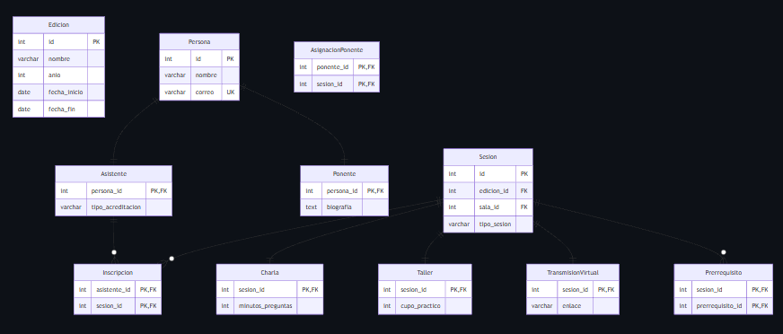

Narrativa al Modelo
Relacional Avanzado
ConectaTech — Sistema de Gestión de Congresos Profesionales
1 Análisis del Dominio — Entidades y Reglas
Entidades Identificadas
| Entidad | Identificador (PK) | Atributos Clave | Tipo |
|---|---|---|---|
| Edicion | id IDENTITY | nombre, anio, fecha_inicio, fecha_fin, estado | Principal |
| Sede | id IDENTITY | nombre, dirección | Principal |
| Sala | id IDENTITY | nombre, capacidad, sede_id | Principal |
| Persona | id IDENTITY | nombre, correo (UNIQUE), pais | Supertipo |
| Asistente | persona_id | tipo_acreditacion | Subtipo — Jerarquía Solapada |
| Ponente | persona_id | biografia | Subtipo — Jerarquía Solapada |
| Sesion | id IDENTITY | titulo, resumen, fecha, hora_inicio, hora_fin, tipo_sesion | Supertipo |
| Charla | sesion_id | minutos_preguntas | Subtipo — Jerarquía Disjunta |
| Taller | sesion_id | cupo_practico, requisitos_materiales | Subtipo — Jerarquía Disjunta |
| TransmisionVirtual | sesion_id | enlace, plataforma | Extensión 1:1 |
| Empresa | id IDENTITY | nombre (UNIQUE) | Principal |
| Inscripcion | (asistente_id, sesion_id) | fecha_registro, estado, asistio | Asociativa N:M |
| AsignacionPonente | (ponente_id, sesion_id) | rol, orden | Asociativa N:M |
| AcuerdoPatrocinio | id + UNIQUE(empresa,edicion) | categoria, monto, fecha_confirmacion | Asociativa N:M |
| Prerrequisito | (sesion_id, prerrequisito_id) | — | Asociativa Recursiva |
12 Reglas de Negocio
| # | Regla | Origen | Restricción SQL |
|---|---|---|---|
| R1 | fecha_fin no puede ser anterior a fecha_inicio de la edición. | Explícito | CHECK (fecha_fin >= fecha_inicio) |
| R2 | El correo de cada persona debe ser único en el sistema. | Explícito | UNIQUE (correo) |
| R3 | Toda sesión es exactamente Charla o Taller, nunca ambas. | Explícito | CHECK (tipo_sesion IN ('Charla','Taller')) |
| R4 | Un asistente no puede inscribirse dos veces en la misma sesión. | Explícito | PRIMARY KEY (asistente_id, sesion_id) |
| R5 | Ninguna sesión puede ser prerrequisito de sí misma. | Explícito | CHECK (sesion_id != prerrequisito_id) |
| R6 | Una empresa solo puede tener un acuerdo vigente por edición. | Explícito | UNIQUE (empresa_id, edicion_id) |
| R7 | La hora final de la sesión debe ser posterior a la inicial. | Explícito | CHECK (hora_fin > hora_inicio) |
| R8 | La capacidad de una sala debe ser mayor a cero. | Supuesto | CHECK (capacidad > 0) |
| R9 | El cupo práctico de un taller debe ser positivo. | Supuesto | CHECK (cupo_practico > 0) |
| R10 | Los minutos de preguntas de una charla no pueden ser negativos. | Supuesto | CHECK (minutos_preguntas >= 0) |
| R11 | El monto de un acuerdo de patrocinio no puede ser negativo. | Supuesto | CHECK (monto >= 0) |
| R12 | El año de una edición debe ser posterior a 1999. | Decisión propia | CHECK (anio >= 2000) |
2 Modelo Conceptual (Diagrama ER)
modelo-conceptual.mmd en el repositorio.Jerarquía Solapada y Total — Persona
Una persona puede ser asistente, ponente o ambos (solapada). Todo inscrito debe cumplir al menos uno (total). Estrategia: 3 tablas con FK compartida.
Jerarquía Disjunta y Total — Sesión
Una sesión es exactamente de un tipo, nunca de ambos (disjunta y total). Estrategia: columna discriminadora
tipo_sesion + tabla extendida con FK=PK.
3 Modelo Lógico y Decisiones de Transformación
Resumen de Relaciones
| Tipo | Entidades | Cardinalidad | Entidad Asociativa |
|---|---|---|---|
| 1:1 | Sesion → TransmisionVirtual | Una sesión tiene como máximo una transmisión virtual | TransmisionVirtual (PK = FK) |
| 1:N | Sede → Sala | Una sede contiene varias salas | — |
| 1:N | Edicion → Sesion | Una edición organiza múltiples sesiones | — |
| 1:N | Sala → Sesion | Una sala aloja varias sesiones en distintos horarios | — |
| N:M | Asistente ↔ Sesion | Un asistente puede inscribirse en varias sesiones | Inscripcion |
| N:M | Ponente ↔ Sesion | Un ponente puede participar en varias sesiones | AsignacionPonente |
| N:M | Empresa ↔ Edicion | Una empresa patrocina distintas ediciones | AcuerdoPatrocinio |
| Recursiva | Sesion → Sesion | Una sesión puede requerir completar otras sesiones previas | Prerrequisito |
Estrategias de Jerarquía
Se usó Superclase + Subclases separadas. Cada fila en Asistente o Ponente tiene persona_id como PK y FK simultáneamente, reutilizando la identidad del supertipo. Permite registrar una persona en ambas tablas sin inconsistencias.
La tabla Sesion contiene tipo_sesion VARCHAR CHECK IN ('Charla','Taller'). Las tablas Charla y Taller extienden con FK=PK, garantizando exactamente un tipo por fila.

4 Implementación SQL en PostgreSQL 18
01_schema.sql → 02_seed.sql → 03_queries.sql → 04_invalid_tests.sql desde una base de datos vacía, sin edición manual.Fragmento representativo del Schema
CREATE TABLE Sesion ( id INT GENERATED ALWAYS AS IDENTITY PRIMARY KEY, edicion_id INT NOT NULL REFERENCES Edicion(id) ON DELETE CASCADE, sala_id INT REFERENCES Sala(id) ON DELETE SET NULL, titulo VARCHAR(200) NOT NULL, hora_inicio TIME NOT NULL, hora_fin TIME NOT NULL, tipo_sesion VARCHAR(20) NOT NULL CHECK (tipo_sesion IN ('Charla', 'Taller')), CHECK (hora_fin > hora_inicio) ); CREATE TABLE Prerrequisito ( sesion_id INT NOT NULL REFERENCES Sesion(id) ON DELETE CASCADE, prerrequisito_id INT NOT NULL REFERENCES Sesion(id) ON DELETE CASCADE, PRIMARY KEY (sesion_id, prerrequisito_id), CHECK (sesion_id != prerrequisito_id) -- Evita autorrelacion );
Consulta Multi-tabla (03_queries.sql)
SELECT p.nombre AS asistente, s.titulo AS sesion, e.nombre AS edicion, i.fecha_registro FROM Persona p JOIN Asistente a ON p.id = a.persona_id JOIN Inscripcion i ON a.persona_id = i.asistente_id JOIN Sesion s ON i.sesion_id = s.id JOIN Edicion e ON s.edicion_id = e.id ORDER BY e.fecha_inicio, s.hora_inicio;
5 Datos de Prueba — Seed
ConectaTech 2026 (Presencial)
ConectaTech 2027 (Planificación)
Ana, Carlos, Elena, David, Sofía, Luis
5 asistentes · 3 ponentes
3 charlas + 3 talleres
1 sesión virtual con transmisión
Asistentes distribuidos en distintas sesiones y ediciones
David (IA + Postgres)
Sofía (Seguridad) · Luis (Cloud)
TechGlobal Platino $10k
CloudNet Oro $5k · DataSec 2027
6 Restricciones — 6 Operaciones Inválidas Rechazadas
INSERT INTO Inscripcion (asistente_id, sesion_id) VALUES (1, 1);
DETAIL: Key (asistente_id, sesion_id)=(1, 1) already exists.
INSERT INTO Sesion (..., sala_id, ...) VALUES (..., 999, ...);
DETAIL: Key (sala_id)=(999) is not present in table "sala".
INSERT INTO Edicion (nombre, anio, fecha_inicio, fecha_fin, estado)
VALUES ('Bad Edition', 2026, '2026-10-12', '2026-10-10', 'Activa');
DETAIL: Failing row contains (Bad Edition, 2026, 2026-10-12, 2026-10-10, Activa).
INSERT INTO Persona (nombre, correo, pais) VALUES ('Sin Correo', NULL, 'Mexico');
DETAIL: Failing row contains (7, Sin Correo, null, Mexico).
INSERT INTO Prerrequisito (sesion_id, prerrequisito_id) VALUES (1, 1);
DETAIL: Failing row contains (1, 1).
INSERT INTO AcuerdoPatrocinio (empresa_id, edicion_id, categoria, monto, fecha_confirmacion)
VALUES (1, 1, 'Plata', 2000.00, '2026-05-01');
DETAIL: Key (empresa_id, edicion_id)=(1, 1) already exists.
7 Reproducibilidad — Docker Compose
services:
db:
image: postgres:18
container_name: conectatech_db
environment:
POSTGRES_USER: postgres
POSTGRES_PASSWORD: ${DB_PASSWORD:-postgres}
POSTGRES_DB: conectatech
ports:
- "5432:5432"
Flujo Completo desde Cero
| Paso | Acción / Comando | Resultado |
|---|---|---|
| 1 | docker-compose up -d | Inicia PostgreSQL 18 en localhost:5432 |
| 2 | Ejecutar 01_schema.sql | Crea las 15 tablas con todas las restricciones |
| 3 | Ejecutar 02_seed.sql | Inserta 2 ediciones, 6 personas, 6 sesiones, 8 inscripciones |
| 4 | Ejecutar 03_queries.sql | Consulta multi-tabla devuelve resultados correctos |
| 5 | Ejecutar 04_invalid_tests.sql | Las 6 operaciones fallan con sus respectivos errores |
| 6 | docker-compose down -v | Elimina contenedor y volumen — base de datos vacía nuevamente |